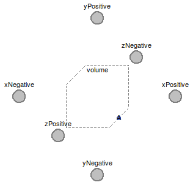

Table of Contents
- User's Guide
- BCs**
- Sensors
- Assemblies**
- Regions**
- Subregions
- Connectors
- Characteristics
- Units
- Quantities
- BaseClasses
- **Please check back soon or contact kdavies4 at gmail.com.
Download
- Latest: FCSys-2.0.zip (**Check back soon.)

| Name | Description |
|---|---|
| PartialSubregion | Partial subregion model for multi-dimensional and multi-species storage, transport, and exchange |
 FCSys.Subregions.BaseClasses.PartialSubregion
FCSys.Subregions.BaseClasses.PartialSubregion
Notes:
thermoOpt==ThermoOpt.OpenDiabatic)
within the instances of the matched Species models.
If either or both of the faces are closed (thermoOpt==ThermoOpt.ClosedAdiabatic or
thermoOpt==ThermoOpt.ClosedDiabatic), then the interface will be closed.
note applies to the viscous/inviscous and diabatic/adiabatic properties.Extends from FCSys.BaseClasses.Icons.Names.Top3.
| Type | Name | Default | Description |
|---|---|---|---|
| Geometry | |||
| Length | L[Axis] | Length (L) [l] | |
| Assumptions | |||
| Axes with linear momentum included | |||
| Boolean | inclLinX | true | X |
| Boolean | inclLinY | false | Y |
| Boolean | inclLinZ | false | Z |
| Axes with faces included | |||
| Boolean | inclXFaces | true | X |
| Boolean | inclYFaces | true | Y |
| Boolean | inclZFaces | true | Z |
| Type | Name | Description |
|---|---|---|
| FaceBus | xNegative | Negative face along the x axis |
| FaceBus | xPositive | Positive face along the x axis |
| FaceBus | yNegative | Negative face along the y axis |
| FaceBus | yPositive | Positive face along the y axis |
| FaceBus | zNegative | Negative face along the z axis |
| FaceBus | zPositive | Positive face along the z axis |
partial model PartialSubregion "Partial subregion model for multi-dimensional and multi-species storage, transport, and exchange" extends FCSys.BaseClasses.Icons.Names.Top3; // Geometric parameters inner parameter Q.Length L[Axis](each min=Modelica.Constants.small,start=ones (3)*U.cm) "Length (L)"; final inner parameter Q.Area A[Axis]={L[cartWrap(axis + 1)]*L[cartWrap(axis + 2)] for axis in Axis} "Cross-sectional area"; final parameter Q.Volume V=product(L) "Volume"; // Assumptions about components of linear momentum parameter Boolean inclLinX=true "X"; parameter Boolean inclLinY=false "Y"; parameter Boolean inclLinZ=false "Z"; // Assumptions about faces parameter Boolean inclXFaces=true "X"; parameter Boolean inclYFaces=true "Y"; parameter Boolean inclZFaces=true "Z";FCSys.Connectors.FaceBus xNegative if inclXFaces "Negative face along the x axis"; FCSys.Connectors.FaceBus xPositive if inclXFaces "Positive face along the x axis"; FCSys.Connectors.FaceBus yNegative if inclYFaces "Negative face along the y axis"; FCSys.Connectors.FaceBus yPositive if inclYFaces "Positive face along the y axis"; FCSys.Connectors.FaceBus zNegative if inclZFaces "Negative face along the z axis"; FCSys.Connectors.FaceBus zPositive if inclZFaces "Positive face along the z axis"; FCSys.Subregions.Volume volume(final n_lin=n_lin, final V=V) "Model to establish space for species"; protected final parameter Integer n_lin=countTrue({inclLinX,inclLinY,inclLinZ}) "Number of components of linear momentum";end PartialSubregion;